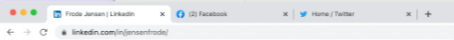

1: Set up the HTML
In lesson 2, Add Button & Input Tag, we just set it up as a regular HTML page!
So in the body tag, we simple add input and button elements, with id's to access via JavaScript later on.
The result:

The code:

Then, style to your heart's content!
2: Make the Button Work with JS
We get to our first JavaScript in lesson 4, Make the Input Button Work with onclick.
Remember to link the .js file in the HTML!
While there add the functionality to the button element:
button id="input-btn" onclick="saveLead()"
We begin the JS file by creating the function statement.
3: Make the Button 'Better'
In lesson 5, Refactor to addEventListener, we change how the button is activated. This is the 'professional' way.
In our JS, we grab the id:
let inputBtn = document.getElementById("input-btn")
This way we can remove the onclick from our HTML, so our JS handles all the event listeners. And our HTML looks that little bit cleaner!

4: Begin Work on the Input Array
On to lesson 8, Create the myLeads Array & inputEl.
Here we set up the infastructure for a working extension!
Two variables are needed, to save the leads and to accept user input.
Here you consider which variables should be let or const, meaning 'decide which ones will change in the program.'
Our button declaration should be changed, as seen in the following code:

5: Add New Leads to the Array
Skipping to lesson 10, Push to the myLeads Array, we begin adding the leads so numerous ones can be displayed.
This will keep pushing the same hard-coded value into the array. So improvement is needed...
6: Actually Use the User Input
Lesson 11, Push the Value from the Input Field, makes our extension a lot more useful!
We access the value from the input thusly:
myLeads.push(inputEl.value)
7: Implement a Loop for the Leads
On to lesson 12, Use a for Loop to Log Out Leads, we begin to show the user their leads!
Since the MVP requires us to display the leads to the user, we need to begin to show them one-by-one.
What better way than using a for loop?
Of course, I forgot to write myLeads[i], when reviewing! I consistently do this and wonder when I'll finally remember!
8: Get Ready to Display the Leads as a List
Lucky lesson 13, Create the Unordered List, starts work on how the leads will be displayed under the Submit button.
This lesson simply adds the element to the HTML:

And grabs the element in JavaScript:
const ulEl = document.getElementById("ul-el")
9: Put the Leads in the List
Moving on to lesson 14, Render the Leads in the Unordered List, we start out 'wrongly' showing them as plain text to be fixed later.
Remember to use += so it doesn't clear out the textContent each time!

And this is why this is the wrong way! Although we are getting there...
10: Make Them an Actual List
In lesson 15, we Render <li> Elements with innerHTML, meaning we use JavaScript to inject additonal HTML markup when our index.html file is read by the browser.
These two lessons demonstrate the difference between textContent & innerHTML.
The former is less labour-intensive for our browsers, but they interpret the given value literally. So <li> would show the list item tag directly to the user.
The latter can manipulate the DOM to create new HTML content on the page!

You can also use back tics to clean it up a bit:
`<li> ${myLeads[i]} <li>`
Alternative to innerHTML
Cruising along to lesson 19, Use createElement() and append() instead of innerHTML, we see a different method. It is important to remember to choose the best tool for each project.

We re-write line 13 in the loop as three elements:
- Create a new <li> that will be a constant value each round of the loop,
- Add the textContent to each,
- append() to the unordered list
It is up to you to decide which is more readable!
11: Improve the Performance
Lesson 20, Improving the Performance of Our App, does just that.
Rather than manipulating the DOM each time with innerHTML

First, we create a changable variable with an empty string to accept each listItems.
Second, we change ulEl.innerHTML to that variable.
Third, outside the loop, we have ulEl access the DOM once with innerHTML by adding the listItems.
12: Show the User Data
In lesson 21, Create the render Function, we start showing the user-entered data rather than the hard-coded values.
Working through the logic:
- The user will enter a lead, which will be pushed to the myLeads array on line 1, on the button click on line 6
- Then when we call our new function on line 9
- Which will activate the loop on line 15, adding each lead in <li> tags, saved in listItems on line 14
- Finally, the code will be added to the <ul> through DOM manipulation on line 18
Here's our code to-date:
13: Get Ready for More Data
Lesson 22, Clear the Input Field, shows us how to clear the input field, so the user can easily enter more leads.
Within our Event Listener and before renderLeads(), we simply add:
inputEl.value = ""
14: Make the Leads Hypertext
In lesson 23, Add the <a> Tag, we make the list items more user-friendly.
We will wrap the text of the list item in an <a> tag, so it is clickable!
Remember to add the href and have it open in a new tab!
Another point is to use single quotes for the property values, because we have been using double quotes when adding the HTML elements in the loop - you don't want to 'exit' out of the concatenated string!
This is a tad complicated, because we would first expect to write:
listItems
+=
"<li><a href='#'> + myLeads[i] + "</a>/<li>"
But we need the href to reference a JavaScript variable.
So we use more concatenation! We also add the new tab functionality in the following super-long code:

15: Switch to Template Literals
Lesson 24, Template Strings, demonstates an easy way to do away with all the concatenation.

It makes it much easier to read and allows you to see the syntax highlighting.
16: Prepare to Deploy!!!!!
Skipping the styling of the links, we hop over to lesson 30, Preparing the Deployment, to finally see our beautiful extension sitting in our browser!
You will notice that the Scrimba FILE EXPLORER has 2 new files: icon.png and a JSON file.

These files are used to store and send data by a lot of programming languages. For instance, they are often used to send data from a server to a client (i.e. - from wherever your extension's data is stored to your user in their browser).
This is used to configure our app and it's provide metadata.
So Google Chrome will read this file to find the name, ("name: "Leads tracker:,), & the version number, ("version": "1.1",).
Note: you do need to use double quotes around each key and value.
We also see "manifest_version": 3, which identifies the file version number.
The most important part is "action", which tells the browser what happens when our user clicks on the browser toolbar.
- "default_icon": "icon.png" will, not surprisingly, tell the browser which icon to use, &
- "default_popup": "index.html" will be the little window we've been building.
There is one issue - setting the dimensions - as it will open up to only contain the content, so really just a little bigger than the button.
So in our CSS, we set:
body { min-width: 400px; }Now we download our code as .zip, by using the Scrimba settings button, and saving it to a folder.
17: Deploy!!!!!
Lesson 31, Deploying the Chrome Extension, includes the steps for doing just that!
Go to Chrome Extensions and flip the 'Developer Mode' toggle in the top-right corner.
Then click the 'Load unpacked' button. This brings up the File Explorer, so choose your folder and hit 'Select.'
Boom! If you check your extensions, you'll see your amazing extension!
localStorage
Our wonderful app is alive in our browser's toolbar, but doesn't store data from one session to another - in comes localStorage!
You can inspect this in DevTools from the 'Application' tab.
Click on 'Local Storage' and the site name, gives you key-value pairs.
The values are unique to you. You can test this by opening the console and typing localStorage.clear().
You can even add stuff here! Enter localStorage.setItem("myLeads", "website". Going back to 'Local Storage,' you will see this as a new key-value pair.
More on localStorage
In lesson 33, Your first localStorage, we see how we can persistently store & retrieve data.
We will add a key-value pair to our local storage.

We can delete it, then refresh the browser, but still get it back by passing the key.

When you use localStorage.clear() and pass in the name, it returns null.
Understanding Arrays in localStorage
On to lesson 34, Storing Arrays in localStorage.
Note that this is actually a method on an object: Window.localStorage. But a good quirk of JavaScript is it's not necessary to write Window.
Everything stored in localStorage must be a string. But we are using a myLeads array. So how do we do that?
We must use JSON.stringify() & JSON.parse().
Let's work out the logic of this issue:
- Turn the array into a string with back tics

- But then we can't add new items to our array using push() as this only works on arrays, not strings.
- So to use this method, we first need to parse it:
This has some extra steps here, so I'll show the lesson's challenge:
18: Save Our Leads
In lesson 35, Save the Leads to localStorage, we apply our new knowledge to our app.
In our Event Listener beginning on line 6, we wait until we've cleared our input field on line 8, then write:

So this saves the item to localStorage as a key-value pair via setItem(), and as a string with JSON.stringify().
19: Access Our Leads
Now lesson 36, Get the Leads from localStorage, will retrieve the saved leads to show the user.
This code will go into localStorage, fetch the leads, and display them.

- Get the leads from localStorage using the saved key, "myLeads"
- Turn it back into an array with JSON.parse()
- Then save it to a variable that we can change, leadsFromLocalStorage
We do this above the button Event Listener, so it can retrieve any previous leads before rendering out the newly entered url's.
If there were no leads entered, the console.log would return null, which is a falsy value. Lesson 37 goes more into Truthy and Falsy values.
20: Check If Leads Should Be Displayed
On to lesson 39, Checking localStorage Before Rendering, we use an if statement to check for Truthy or Falsy, and only call renderLeads() when true.

21: Create the Delete Button
After styling the delete button, lesson 41, Make the Delete Button Work, gives users the ability to get rid of spent leads.
This is pretty much a reverse of renderLeads().
- Remember to grab the id on line 6
- Add the Event Listener on line 17, but with a twist!
- We use "dblclick" rather than our much loved "click" event.
- Then we just clear everything out:
- localStorage on line 19
- The myLeads array on line 20, and
- The HTML rendered to the DOM on line 21 or 22.

22: Refactor for Dynamism
With lots of parameter v.s. argument practice, we arrive at lesson 48, Refactor renderLeads() To Use A Parameter.
Really it is just changing all but the first instance of myLeads to leads. Anywhere but the variable assignment or anywhere it is passed as a parameter is changed, except where the code explicitly reassigns it. It can be a bit confusing, so check out the vid!
23: Add a Save Tab Button Using an API
The next four lessons cover adding the ability to save the current Chrome tab directly in the extension.
This is so awesome, but a tad confusing as it uses an API! So this step comprises four lessons.
In Lesson 49, Create the Tab Button, we, well, create the tab button.
Then we wire it up to log Per's LinkedIn page to the console.

Yes, it does sound a bit strange, but... it demonstrates how to access an object's key within an array using bracket and dot notation.
Cool... but we haven't saved it yet, so in lesson 50, Save the Tab URL, we rectify that!
Not so surprising, but this is pretty much the same as the inputBtn!
- myLeads.push("tabs[0].url") to push the object key's value, which is the first, and only array item, to the myLeads array,
- Save the item to localStorage as a key-value pair, which both need to be strings using localStorage.setItem("myLeads", JSON.stringify(myLeads) )
- Then re-render with render(myLeads).
Lesson 51 introduces the API to get the tab, How To Get the Current Tab.
The first task is deciding where to 'talk' to the Google Chrome API. Which, of course, is within the Event Listener.
Okay, but how?
Searching for "google chrome get current tab" leads us to the docs with lots of information. The most pertinent parts being:
- modifications to the manifest.JSON file, and...
- Well, we want the actual code, but get a lot of confusing stuff, so...
We can fall back to the Stack Overflow result in our prior search, where a real person already asked our question and a real person answered.
The answers are still quite confusing for a beginner, like myself, but, fortunately, this is a tutorial lead by Per and he gave us a hint back in lesson 49. Remember the const tabs leading to a URL? We find an answer that looks similar to that code, and simply copy & paste it!
Lines 23-24 look quite a bit like our myLeads.push("tabs[0].url"), so we can guess that the code on line 20 just may be what we need to access the API to snag our tab!
Lesson 52, Use the Chrome API To Get the Tab, breaks down this perplexing line.

- chrome is an object & variable, which we will have access to when running our extension. This variable has access to a...
- tabs key, which is also an object that has a method...
- query(), which 'talks' to chrome and 'asks' to see it's tabs, or, more specifically, a specific one
- We point to the unique one we want with an object:
- {active: true} means the tab, which is being viewed in our browser 
- {currentWindow: true} says only the focused window, if more than one are open on the desktop

- Then we declare the function() {}. This will be triggered when Chrome finds the active tab in the current window & will it will give us a tabs variable: function(tabs)
Now that we have that line broken down, we can put our previous code inside the function:
Remember to remove the hard-coded variable pointing to Per's LinkedIn page! So they won't conflict when JavaScript is searching for 'tabs.'
There is another step here - adding to the manifest.json file.
24: Send It Out Into the Wild!!!
The final lesson 53, Deploy the Final Version, gets our extension running!
- Grab the updated files either in your File Explorer or by downloading the .zip file from the scrim's settings.
- Go back to the Chrome Extensions page.
- On our extension's box, click the Details button
- Then click the Update button!
Hurray! We've finally completed our Chrome Extension: Leads Tracker!!!!!